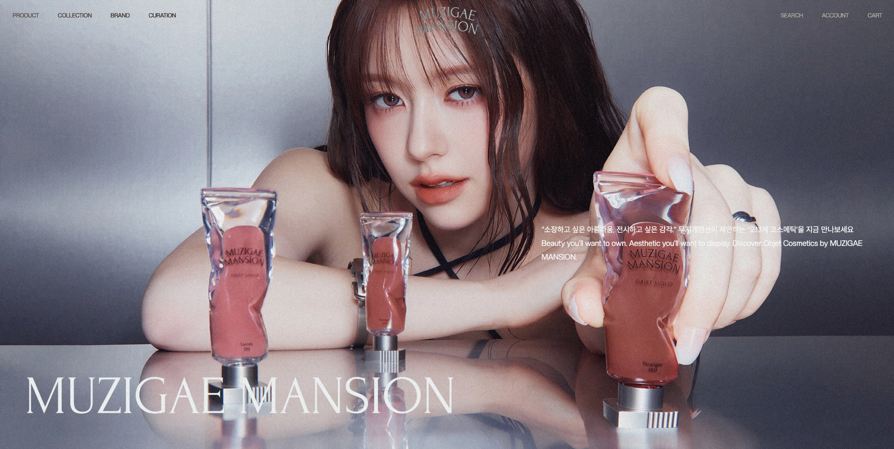
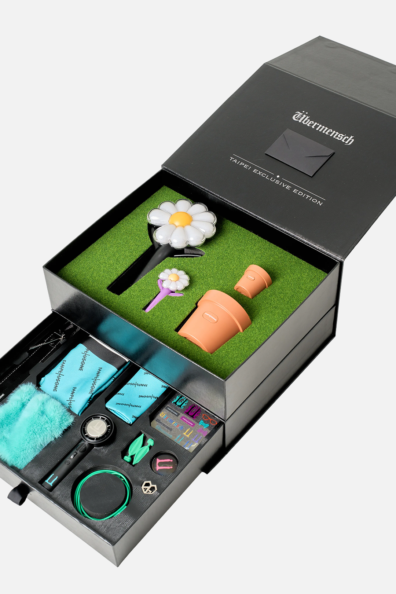
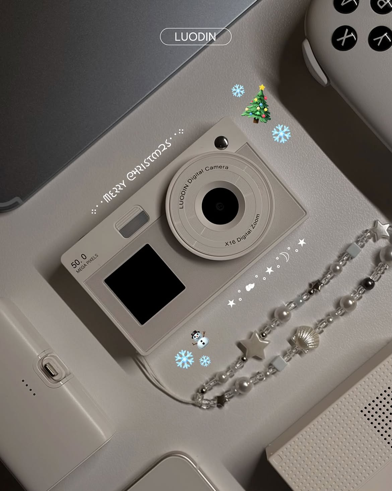
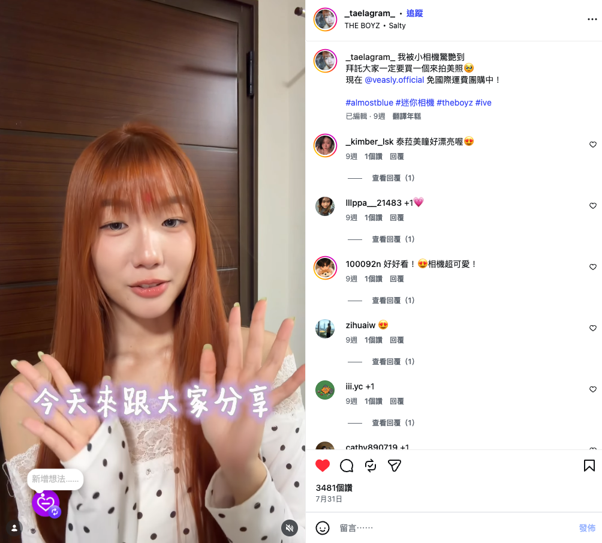
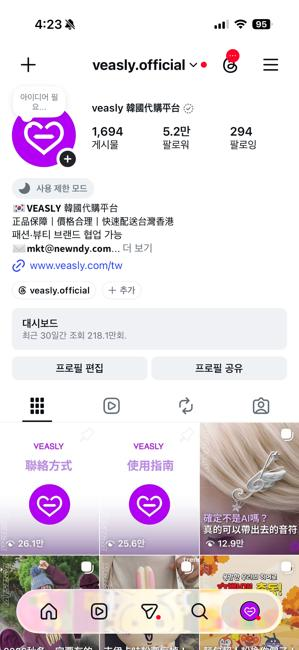

BEAUTY / 2025(01)
뷰티의 매력을,
현지의 언어로.
색조 제품을 직접 사용하는 크리에이터의 리뷰 안에, 제품의 특징과 구매 경험을 함께 담은 협업입니다.
Muzigae Mansion · VEASLY
인플루언서 협업 운영 · 콘텐츠 현지화

색조 제품을 직접 사용하는 크리에이터의 리뷰 안에, 제품의 특징과 구매 경험을 함께 담은 협업입니다.
Muzigae Mansion · VEASLY
인플루언서 협업 운영 · 콘텐츠 현지화

예쁜 굿즈를 다시 상자에 넣어두는 불편함. 팬으로서 발견한 문제를 개봉 이후에도 전시할 수 있는 패키지 아이디어로 풀었습니다.
GD 대만 한정 세트 · VEASLY
패키지 콘셉트 제안 · 출시 캠페인 운영

아이돌의 사용 사례와 레트로 트렌드에 주목했습니다. 대만 고객의 취향과 가격 눈높이에 맞는 상품을 찾아 콘텐츠로 소개했습니다.
루어딘 디지털카메라 · VEASLY
상품 발굴 · 현지 콘텐츠 제작

라이프스타일 크리에이터가 직접 경험한 소품의 매력과 구매 혜택을 소개합니다. 루어딘 상품 발굴과는 별개의 협업 사례입니다.
almostblue · VEASLY
인플루언서 협업 운영 · 콘텐츠 현지화

고객의 질문과 댓글을 읽고, 현지에 맞는 표현과 콘텐츠로 바꿉니다. 기획부터 촬영·편집, 반응 확인까지 이어온 채널 운영의 기록입니다.
VEASLY 대만 SNS
SNS 콘텐츠 기획·제작 · 채널 운영

안녕하세요, 마케터 견심여입니다. 대만에서 자라 한국에서 경영학을 공부했고, VEASLY에서 대만 소비자와 한국 팀 사이의 소통을 맡아왔습니다.
현지의 질문과 반응을 읽어 콘텐츠로 만들고, 브랜드의 메시지를 크리에이터의 표현과 조율합니다. 소비자의 시각에서 브랜드를 더 깊이 이해하고, 함께 성장할 다음 팀을 찾고 있습니다.
팬의 불편함을 패키지 콘셉트로 풀고, 상품의 가치를 현지 고객이 이해할 메시지로 제안합니다.
상품과 고객 질문을 콘텐츠 기획·디자인·촬영·편집으로 연결하고, 반응을 다음 기획에 반영합니다.
크리에이터 발굴부터 조건 협의, 가이드·검수, 일정·이슈 대응, 게시와 정산까지 운영합니다.
Localization Manager · 대만 시장 담당
2025.04–2025.09 인턴 · 2025.09 정규직 전환
경영학 학사